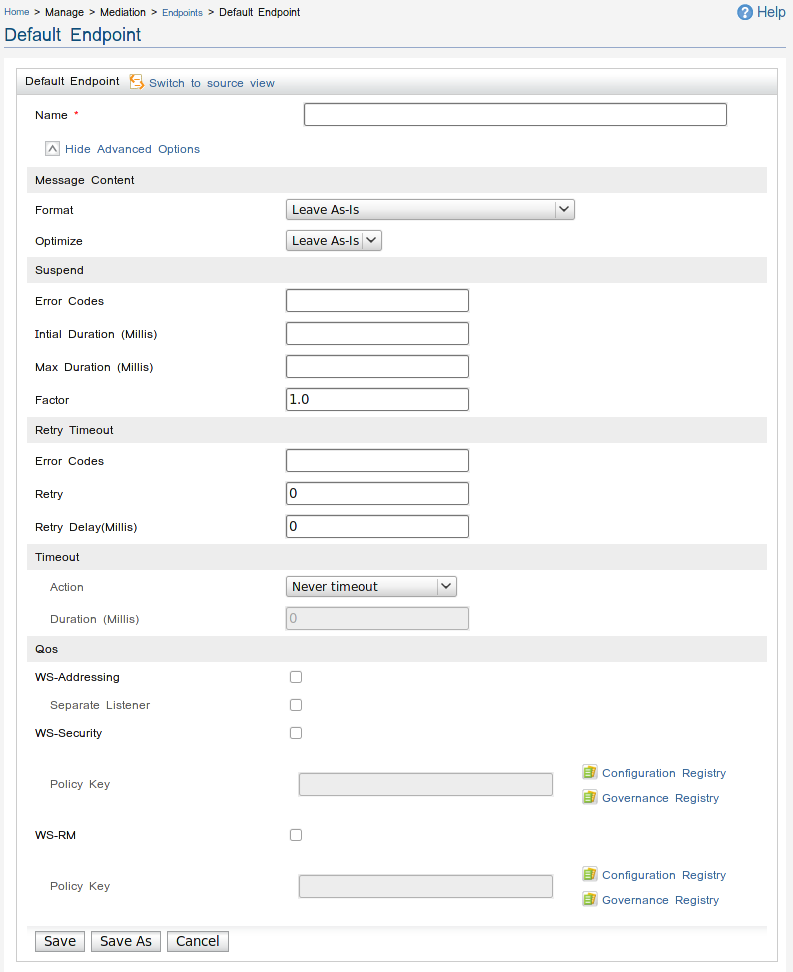
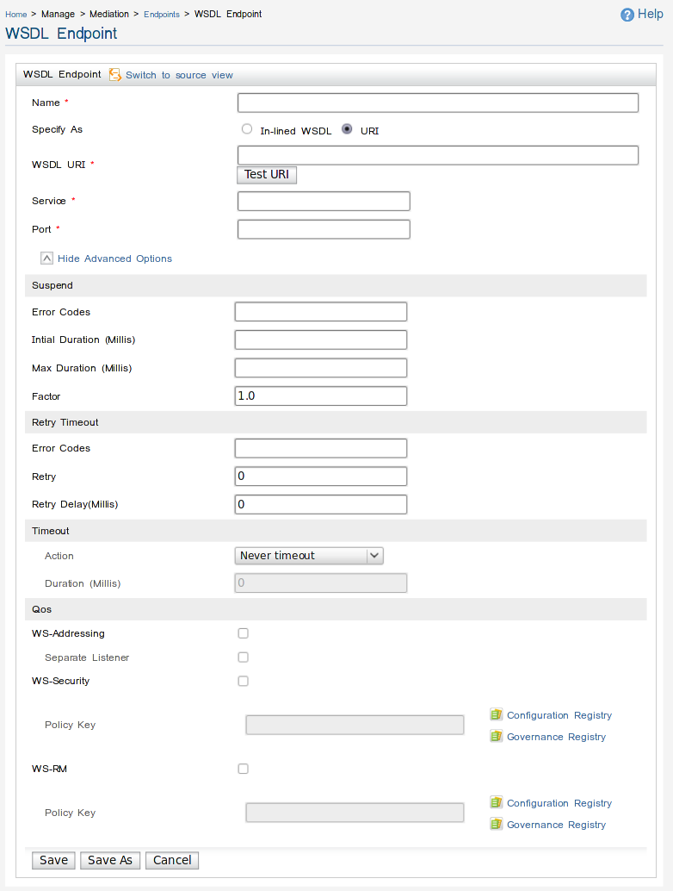
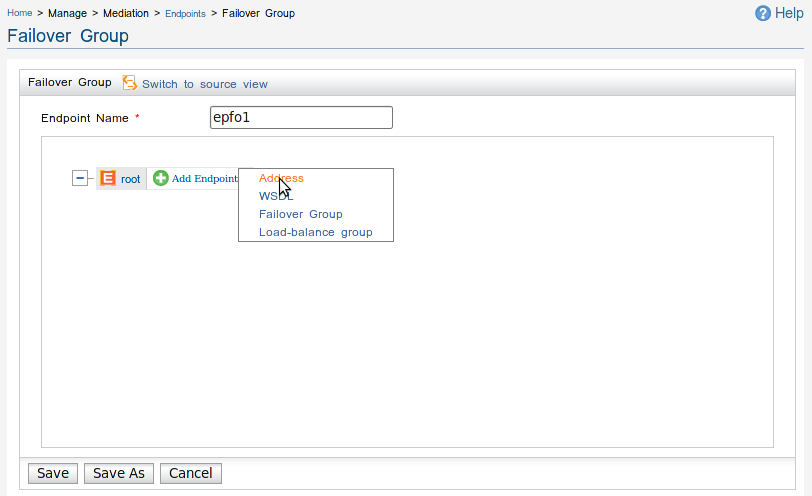
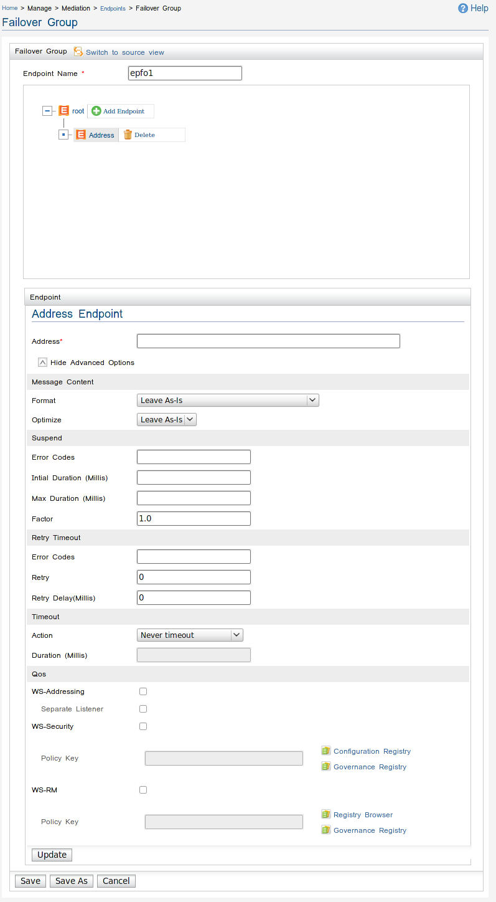
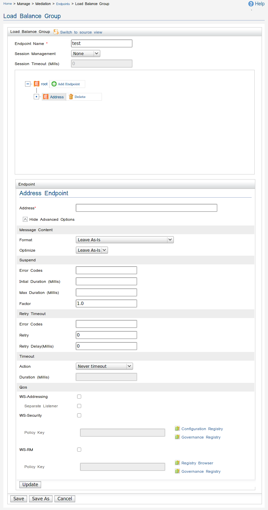

Endpoint Management
Use the Endpoint Management feature to add, remove and change endpoints. The endpoints defined here can be used when you are designing proxy services.
- In the navigator, under Manage/Mediation, click Endpoints. The Manage Endpoints page appears.
- In the Add Endpoint tab, select the endpoint you want
to add.
The available options are:
- Address Endpoint - Defines the direct URL of the service
- Default Endpoint - Defines additional configuration for the default target
- WSDL Endpoint - Defines the WSDL, Service and Port
- Fail-over Endpoint - Defines the endpoints that the service will try to connect to in case of a failure. This will take place in a round robin manner.
- Load-Balance Group - Defines groups of endpoints for replicated services.The incoming requests will be directed to these endpoints in a round robin manner. These endpoints automatically handle the fail-over cases as well.
Figure 1: Selections for Endpoints
Adding an Address Endpoint
- In the Add Endpoint tab, click Address Endpoint. The Address Endpoint page appears with its default view.
- In case, you want to configure Advanced Options, then click on Show Advanced Options drop down pane. Then the page with all the available Address Endpoint Options appears.
- Enter the required details in the fields.
The following fields are specific to the Address Endpoint.
- Name: The unique name for the endpoint
- Address: The URL of the endpoint. You can test the availability of the given URL on the fly by just clicking the Test Address.
- Format: The message format for the endpoint. The available values
are:
- Leave As-Is: No transformation is done to the outgoing message.
- SOAP 1.1: Transforming message to SOAP 1.1
- SOAP 1.2: Transforming message to SOAP 1.2
- Plain Old XML (POX) - Transforming to plain old XML format
- Representational State Transfer (REST/GET) - Transforming to HTTP Get Request
- Optimize: Optimization for the message which transfers binary
data. The available values are:
- Leave As-Is: No special Optimization. Keep the original message
- SwA: Optimized as a SwA (SOAP with Attachment) message.
- MTOM: Optimized as a MTOM (message transmission optimization mechanism)
Figure 2: Configuring Address Endpoint
Figure 3: Configuring Address Endpoint - Advanced Options
Note : The rest of the fields are general to all endpoints. Common Field Descriptions.
Adding a Default Endpoint
- In the Add Endpoint tab, click Default
Endpoint. The Default Endpoint page
appears. You can switch to the advanced option by clicking on Show Advanced Options drop down pane.
Figure 4: Configuring Default Endpoint
- Enter the required details in the fields.
The Default Endpoint differ from the Addressing Endpoint only by the URL attribute.
Note : The rest of the fields are general to all endpoints. Common Field Descriptions.
Adding a WSDL Endpoint
- In the Add Endpoint list, click WSDL
Endpoint. The WSDL Endpoint page
appears.
Figure 5: Configuring WSDL Endpoint
- Enter the required details in the fields.
The following fields are specific to the WSDL Endpoint.
- Name: A unique name for the endpoint.
- Specify As: The method to specify the WSDL. The available values
are:
- In-lined WSDL: Paste the WSDL in the text box that appears when this option is selected.
- URI: Activates the WSDL URI field.
- WSDL URI: The URI of the WSDL.
- Service: The service selected from the available services for the WSDL.
- Port: The port selected for the service specified in the above field. In a WSDL, an endpoint is bound to each port inside each service.
Note: The rest of the fields are general to all endpoints. Common Field Descriptions.
Adding a Fail-Over Endpoint
- In the Add Endpoint list, click Fail-Over Endpoint. The Failover Endpoint page appears.
- In the Endpoint Name field, enter a name for the endpoint.
- Click root. A shortcut menu with the available
endpoints appears.
Figure 6: Adding Fail-over Endpoint
- Click on the endpoint you want to add as a failover endpoint.A tab with the fields relevant to the selected endpoint appears.
- Enter the details and click Save.
Field Descriptions
The following screenshot displays adding a Address endpoint to the fail-over
endpoint list.
Figure 7: Configuring Fail-over Endpoint
You can add fail-over and load-balance endpoints interchangeably to as many levels as you want. The above screenshot is a possible arrangement of endpoints prepared for demonstration purposes.
Adding a Load-Balance Group Endpoint
- In the Add Endpoint list, click Load Balance Group Endpoint. The Load Balance Group Endpoint page appears.
- Enter the required details in the fields.
The following fields are specific to the Load-balance Group Endpoint.
- Endpoint Name: A unique name for the endpoint.
- Session Management: A session management method from the load
balancing group. The possible values are.
- None: Session management is not used.
- Transport: Session management is done on the transport level using HTTP cookies.
- SOAP: Session management is done using SOAP sessions.
- Client ID: Session management is done using an ID sent by the client.
- Session Timeout(ms): Session timeout in milliseconds.
Figure 8: Configuring Load balance Group Endpoint
- Click root. A shortcut menu with the available endpoints appears
- Click on the endpoint you want to add as a load-balance group endpoint.A tab with the fields relevant to the selected endpoint appears.
- Enter the details and click Save. You can add as many endpoints as you need to the load balancing group. Note : Please refer to the Fail-over endpoint section on this guide for explanations and screen shots about how you can design the load balancing and fail-over endpoints in multiple levels
Adding Template endpoints
- In the Add Endpoint tab, click Template Endpoint. The Template Endpoint page appears with its default view.
- Enter the required details in the fields.
The following fields are specific to the Template Endpoint.
- Name: The unique name for the template endpoint
- Address: The URL of the template endpoint. If an endpoint part of a target template has an address element with $uri declared in it, then it will be populated with the value specified in this address field. As always you can test the availability of the given URL on the fly by just clicking the Test Address.
- Target Template: Target template for this endpoint.
- In case, you want to add parameters to template Endpoints, then click on Add Parameters button. Then the page will be appear with the parameter table. You can add and delete parameter name/value pairs.
Figure 9: Configuring Template Endpoint

Figure 9.1: Adding template Endpoint Parameters
Adding dynamic endpoints
- To add a dynamic endpoint click on Save As which will display the dynamic endpoint save UI.
- Select either Governance Registry or Configuration Registry.
- Provide the key for the dynamic endpoint. This key will use as the path for the resource that will be added into Registry.
Figure 10: Adding a dynamic endpoint
Saved dynamic endpoint will be displayed as follows
Figure 10.1: Saved dynamic endpoint
Description of Fields Common to All Endpoints
| Field Name | Description |
| Suspend Error Codes | A list of error codes. If these error codes are received from the endpoint, the endpoint will be suspended |
| Initial Duration (Millis) | The duration that the endpoint is suspended for the first time after the receiving the suspend error codes. |
| Max Duration (Millis) | The maximum duration that the endpoint is suspended after the receiving the suspend error codes. |
| Factor | The duration to suspend can vary from the first time suspension to the subsequent time. The factor value decides the suspense duration variance between subsequent suspensions. |
| On Timeout Error codes | A list of error codes. If these error codes are received from the endpoint, the request will be subjected to a timeout. |
| Retry | The number of re-tries in case of a timeout, caused by the above listed error codes. |
| Retry Delay(Millis) | The delay between re-tries, in milli seconds. |
| Timeout Action | The action to be done at a timeout situation. You can select from,
|
| Timeout Duration (Mills) | The duration in milli seconds before considering a request as timeout |
| WS-Addressing | Adds WS-Addressing headers to the endpoint. |
| Separate Listener | The listener to the response will be a separate transport stream from the caller |
| WS-Security | Adds WS-Security features as described in a policy key (referring to a registry location). |
| WS-Reliable Messaging | Adds WS-Reliable Messaging features as described in a policy key (referring to a registry location). |